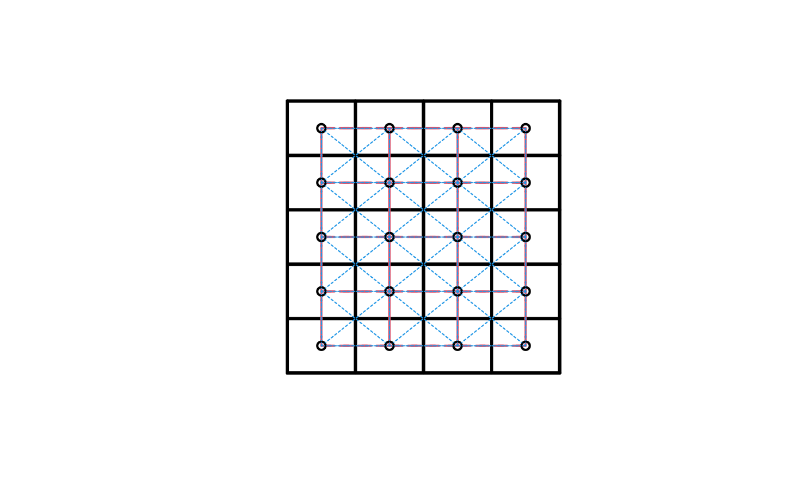

grid2nb.RdThe function builds a neighbours list for a grid topology. It works for a k-dimentional grid topology, k>=1.
grid2nb(grid, d = grid@cells.dim,
queen = TRUE, nb = TRUE, self = FALSE)An object of class GridTopology. One can avoid to
supply this by just suplying the dimentions in the d argument.
A scalar (for one dimentional grid) or a length k vector specyfying the number of grid cells in each direction of the k dimentions.
Logical. Default is TRUE. To inform if the queen neighbourhood structure should be considered. If FALSE, only a hyper-cube with a common face will be considered neighbour. If TRUE, a single shared coordinate meets the contiguity condition.
Default TRUE. If TRUE, return the result as a neighbours
list with class nb. If FALSE, the result is a matrix with
3^k columns if self = TRUE or 3^k-1 if
self = FALSE. Zeros are used for hyper-cubes at boundaries.
Default FALSE, to indicate if the hyper-cube neighbour itself should be considered a neighbour.
Either a matrix, if “nb” is FALSE or a neighbours list with
class nb. See card for details of “nb”
objects.
This applies to a k-dimentional grid topology.
nb <- grid2nb(d = c(5L, 5L, 5L))
nb
#> Neighbour list object:
#> Number of regions: 125
#> Number of nonzero links: 2072
#> Percentage nonzero weights: 13.2608
#> Average number of links: 16.576
summary(nb)
#> Neighbour list object:
#> Number of regions: 125
#> Number of nonzero links: 2072
#> Percentage nonzero weights: 13.2608
#> Average number of links: 16.576
#> Link number distribution:
#>
#> 7 11 17 26
#> 8 36 54 27
#> 8 least connected regions:
#> 1 5 21 25 101 105 121 125 with 7 links
#> 27 most connected regions:
#> 32 33 34 37 38 39 42 43 44 57 58 59 62 63 64 67 68 69 82 83 84 87 88 89 92 93 94 with 26 links
if (require("sp", quietly=TRUE)) {
gt <- GridTopology(c(.125,.1), c(.25,.2), c(4L, 5L))
nb1 <- grid2nb(gt, queen = FALSE)
nb2 <- grid2nb(gt)
sg <- SpatialGrid(gt)
plot(sg, lwd=3)
plot(nb1, coordinates(sg), add=TRUE, lty=2, col=2, lwd=2)
plot(nb2, coordinates(sg), add=TRUE, lty=3, col=4)
str(grid2nb(d=5))
}

#> List of 5
#> $ : int 2
#> $ : int [1:2] 1 3
#> $ : int [1:2] 2 4
#> $ : int [1:2] 3 5
#> $ : int 4
#> - attr(*, "class")= chr "nb"